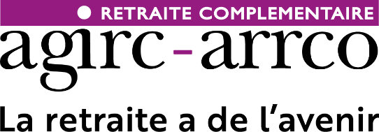
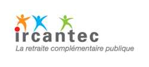
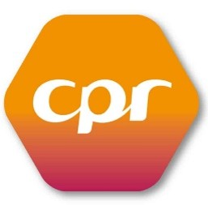

Les retraites obligatoires en France
42 régimes nationaux
Régimes de base
Des trimestres acquis qui fixent un taux, appliqué à une moyenne de revenus.
Cotisations plafonnées · Mécanismes de lissage
Régimes complémentaires
Des cotisations déplafonnées qui attribuent des points en fonction des revenus.
Points convertis en montant de pension
")

")





Problématiques spécifiques
Les carrières à l'international
Contrat d'expatrié, VIE, contrat local ou cotisations volontaires ?
Pays avec ou sans convention de Sécurité Sociale avec la France ?
Quel impact pour ma retraite française en termes de trimestres ?
Ai-je droit à une pension dans ce pays ? Quand ? Combien ? Comment ?

Union Européenne
Convention bilatérale
Hors convention